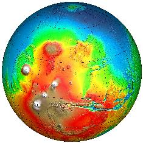
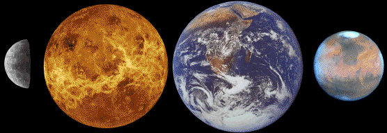

ASTR 1210 (O'Connell)
TOPIC GUIDE/OUTLINE FOR THE
TERRESTRIAL PLANETS

Mars Relief Map from the Mars Global Surveyor Mission.
Click
for enlargement.
The next 5-6 lectures will cover the terrestrial planets.
These include Mercury, Venus, Earth, and Mars and also (from a
structural point of view) the Earth's Moon.
This page lists the main topics to be discussed.
By comparing the planets and identifying differences and similarities
("comparative planetology") we gain much more information on
how they came to be than if we just studied one planet. For instance,
the horrific conditions on Venus triggered the realization that a
human-induced "Greenhouse effect" could be a threat to
the climate on Earth.
A. General Properties
- Near Sun (< 2 AU)
- Dense, rocky materials
- Well defined surfaces (unlike the Jovian planets)
- Atmospheres: None (Mercury, Moon) or thin (Earth, Mars, Venus) by
the standards of the Jovian planets (although Venus' atmosphere is 90 times
more massive than Earth's)
- Few satellites: Earth (1), Mars (2)
B. Exploration: mainly by space missions since 1960
- Mapping by spacecraft: all. Venus by radar.
- Robot landers: all but Mercury
- Human landings: Moon
- For a history of solar system exploration, both of the
terrestrial planets and other bodies, see:
- It's worth noting that any space mission is a major undertaking
and typically involves the skills of thousands of people. We have
invested a great deal in our exploration of the solar system, but it has
paid off in a much better understanding of our own environment.
C. Key Topics
- Earth's uniqueness & biosphere
- Earth interior & plate tectonics
- Moon: impact terrain
- Moon: surface history (from Apollo program) as clue to planet
formation/evolution
- Venus: catastrophic resurfacing
- Venus: Greenhouse Effect
- Mars: topography & surface history
- Mars: evidence for water
- Mars: Meteorite evidence for life(?)
- Mars: the canal illusion and "the abode of life"; popular impact via
The War of the Worlds; UFO's
- Earth/Venus/Mars: evolution of atmospheres; terrestrial climate change
Main Lesson: "little differences mean a lot"

Reading & Web Links:
See individual
Study Guides. Reading will cover Chapters
9 and 10 of the Bennett textbook
as well as "The War of the Worlds."
Last modified
July 2018 by rwo
Text copyright © 1998-2018 Robert W. O'Connell. All
rights reserved. These notes are intended for the private,
noncommercial use of students enrolled in Astronomy 1210 at the
University of Virginia.
 Previous Guide
Previous Guide
 Guide Index
Guide Index
 Next Guide
Next Guide